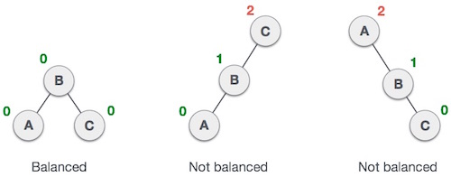
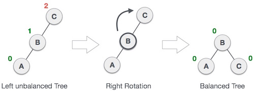

What if the input to binary search tree comes in sorted (ascending or descending) manner? It will then look like this −

It is observed that BST's worst-case performance closes to linear search algorithms, that is Ο(n). In real time data we cannot predict data pattern and their frequencies. So a need arises to balance out existing BST.
Named after their inventor Adelson, Velski & Landis, AVL trees are height balancing binary search tree. AVL tree checks the height of left and right sub-trees and assures that the difference is not more than 1. This difference is called Balance Factor.
Here we see that the first tree is balanced and next two trees are not balanced −
In second tree, the left subtree of C has height 2 and right subtree has height 0, so the difference is 2. In third tree, the right subtree of A has height 2 and left is missing, so it is 0, and the difference is 2 again. AVL tree permits difference (balance factor) to be only 1.
BalanceFactor = height(left-sutree) − height(right-sutree)
If the difference in the height of left and right sub-trees is more than 1, the tree is balanced using some rotation techniques.
To make itself balanced, an AVL tree may perform four kinds of rotations −
First two rotations are single rotations and next two rotations are double rotations. Two have an unbalanced tree we at least need a tree of height 2. With this simple tree, let's understand them one by one.
If a tree become unbalanced, when a node is inserted into the right subtree of right subtree, then we perform single left rotation −

In our example, node A has become unbalanced as a node is inserted in right subtree of A's right subtree. We perform left rotation by making A left-subtree of B.
AVL tree may become unbalanced if a node is inserted in the left subtree of left subtree. The tree then needs a right rotation.
As depicted, the unbalanced node becomes right child of its left child by performing a right rotation.